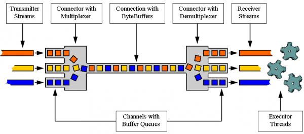

The Net4j Signaling Platform is an extensible client/server communications framework.
Net4j eases the development of fast and maintainable application protocols that are independent of the physical transport medium. Transport protocols are pluggable and Net4j ships with support for TCP, HTTP and in-memory transport. The core of Net4j is a fast, asynchronous and non-blocking buffer multiplexing kernel, based on OSGi but also executable stand-alone.